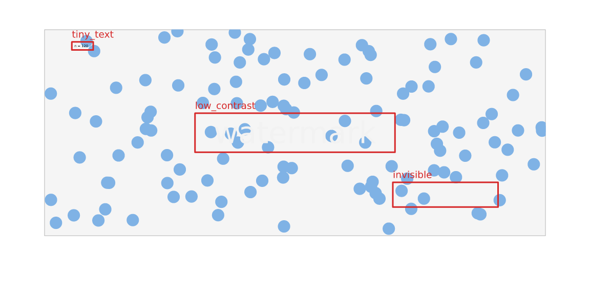

Inspecting a scene: linting, coverage, profiling
Source:vignettes/inspecting-scenes.Rmd
inspecting-scenes.RmdA vellum scene is not only something you render. Because layout and text metrics are resolved before anything is drawn, a finished scene can be asked questions — where will this land, how big will that text be, what is expensive — and answer them exactly, without opening a device.
This article covers the three tools built on that:
vl_lint() finds likely mistakes, scene_stats()
measures coverage and crowding, and profile_render() says
where the time goes.
Why this can exist here
In grid, a grob’s size and position are not knowable until draw time:
text has no measurable width before a device is open,
native units need a viewport, and null units
need a layout context. Anything wanting to check “is this label readable
at the rendered size” would have to re-implement the geometry and hope
it stays in step with the renderer.
vellum resolves all of it up front, and every tool below reads the same resolved numbers the renderer draws with. That is the whole trick.
vl_lint(): static analysis for graphics
Here is a plot with four defects planted in it. Each is the kind of thing you normally discover by exporting the figure and squinting at it.
bad <- vl_scene(5, 3, dpi = 96) |>
push(vl_viewport(name = "panel", y = 0.55, width = 0.85, height = 0.7,
xscale = c(0, 1), yscale = c(0, 1), clip = TRUE)) |>
draw(rect_grob(gp = vl_gpar(fill = "grey96", col = "grey70"))) |>
draw(points_grob(runif(120), runif(120), size = vl_unit(1.6, "mm"),
gp = vl_gpar(fill = "#7FB2E5", col = NA), name = "cloud")) |>
# 1. outside the panel's clip: silently never drawn
draw(points_grob(2.4, 0.5, size = vl_unit(3, "mm"),
gp = vl_gpar(fill = "tomato", col = NA), name = "stray_point")) |>
# 2. too small to read
draw(text_grob("n = 120", x = 0.06, y = 0.93, just = c("left", "top"),
gp = vl_gpar(fontsize = 2.5), name = "n_label")) |>
# 3. will not contrast with the panel behind it
draw(text_grob("watermark", gp = vl_gpar(fontsize = 22, col = "#F2F2F2"),
name = "watermark")) |>
# 4. nothing will ever paint it
draw(rect_grob(x = 0.8, y = 0.2, width = 0.2, height = 0.1,
gp = vl_gpar(fill = NA, col = NA), name = "empty_box")) |>
pop()
vl_lint(bad)
#> 4 lint findings (4 warnings):
#> ✖ [invisible] empty_box: nothing will paint this - alpha is 0, or it has no
#> opaque fill and no stroke
#> ✖ [low_contrast] watermark: contrast 1.0:1 against its backdrop - below 3:1
#> ✖ [offscreen] stray_point: drawn entirely outside the page - check the
#> coordinates or the scale
#> ✖ [tiny_text] n_label: 3.3 px tall - below the 7 px legibility floorEvery finding names the grob, so you can go straight to it. Nothing here needed you to look at the picture.
Seeing the findings
For a graphics linter, a message describing a defect is second best.
vl_lint_overlay() draws the report onto the scene — a box
round each finding, labelled with the rules that fired, red for warnings
and orange for notes:
display(vl_lint_overlay(bad))
The box around empty_box is the one to notice: there is
nothing there to see, which is precisely the finding.
The rules that ship
vl_lint_rules()[, c("rule", "description")]
#> rule
#> 1 blank_label
#> 2 bleed
#> 3 clipped_away
#> 4 cvd_collision
#> 5 degenerate
#> 6 double_draw
#> 7 duplicate_name
#> 8 font_fallback
#> 9 hairline
#> 10 invisible
#> 11 invisible_fill
#> 12 label_on_mark
#> 13 label_overlap
#> 14 low_contrast
#> 15 occluded
#> 16 offscreen
#> 17 overplotted
#> 18 subpixel
#> 19 tiny_text
#> 20 truncated
#> description
#> 1 A text mark has no visible characters.
#> 2 A mark, other than text, escapes its viewport, which does not clip.
#> 3 A mark is clipped out of existence by its viewport.
#> 4 Two colours collapse into one under a colour-vision deficiency.
#> 5 An element resolves to zero size.
#> 6 The same mark is drawn twice in the same place.
#> 7 Two nodes share a name, so only the first can be addressed.
#> 8 A character has no glyph in any font on this machine.
#> 9 A stroke is thinner than half a device pixel.
#> 10 An element has no fill, no stroke, or zero alpha.
#> 11 A mark is filled in the background colour and has no outline.
#> 12 A label covers most of the mark it sits on.
#> 13 Two text labels overlap.
#> 14 Text contrast against its backdrop is below the WCAG threshold.
#> 15 An opaque mark is completely hidden behind a later one.
#> 16 A mark lies completely off the canvas.
#> 17 A batched mark overplots itself badly enough to hide its own density.
#> 18 An area mark is less than one pixel across.
#> 19 Text is too small to read at the rendered size.
#> 20 A mark is partly cut off by the page edge or by its viewport's clip.Findings come at two severities. A warning is a probable defect — text nobody can read, a mark that never reaches the page. A note is something to look at, because the same geometry is sometimes deliberate: a cropped mark, a label inside the bar it belongs to.
A few rules are worth explaining.
tiny_text has two floors, and fires on
either. Device pixels decide whether glyphs survive
rasterisation; points decide whether a human can read them. A pixel
floor alone goes blind at print resolution, because font_px
scales with dpi — 4 pt at 300 dpi is 16.7 px, comfortably
clear of the 7 px default and still unreadable on paper:
tiny <- function(dpi) {
vl_scene(3, 1, dpi = dpi) |>
draw(text_grob("4 pt caption", gp = vl_gpar(fontsize = 4)))
}
vl_lint(tiny(96))$message
#> [1] "5.3 px tall - below the 7 px legibility floor"
vl_lint(tiny(300))$message
#> [1] "4.0 pt - below the 6 pt legibility floor"low_contrast samples the rendered
image, just outside each label’s box on four sides, so it
measures the backdrop the label really sits on — including marks behind
it — rather than assuming the page colour:
faint <- vl_scene(4, 1.2, dpi = 96, bg = "white") |>
draw(text_grob("hard to read", gp = vl_gpar(fontsize = 22, col = "#DDDDDD")))
vl_lint(faint)
#> 1 lint finding (1 warning):
#> ✖ [low_contrast] text: contrast 1.4:1 against its backdrop - below 3:1
# Same text colour, dark page: now it is fine, and the linter agrees.
vl_lint(vl_scene(4, 1.2, dpi = 96, bg = "grey15") |>
draw(text_grob("easy to read", gp = vl_gpar(fontsize = 22, col = "#DDDDDD"))))
#> ✔ No lint findings.cvd_collision catches what the person reviewing
the figure cannot. Two colours meant to be told apart, that a
colour-blind reader sees as one. The colours go through the same
simulation matrices render(cvd = ) draws with, and
distances are compared in Oklab:
swatches <- function(cols) {
s <- vl_scene(4, 1, dpi = 96, bg = "white")
xs <- seq(0.1, 0.9, length.out = length(cols))
for (i in seq_along(cols)) {
s <- draw(s, rect_grob(x = xs[i], width = 0.12, height = 0.6,
gp = vl_gpar(fill = cols[i], col = NA)))
}
s
}
# ggplot2's default three-colour palette.
vl_lint(swatches(c("#F8766D", "#00BA38", "#619CFF")), rules = "cvd_collision")
#> 1 lint finding (1 warning):
#> ✖ [cvd_collision] rect: #F8766D and #00BA38 look the same under deuteranopia
# Okabe-Ito, designed to survive colour-vision deficiency.
vl_lint(swatches(c("#E69F00", "#56B4E9", "#009E73", "#CC79A7")),
rules = "cvd_collision")
#> ✔ No lint findings.The threshold is calibrated so that the second call stays quiet: a
rule that flags a CVD-safe palette is a rule you would switch off. Point
it at other deficiencies with cvd =, where
"achromatopsia" doubles as a greyscale-printer check, or
switch it off with cvd = "none". See
vignette("accessible-output") for simulating the whole
image.
font_fallback reports characters no font on
this machine can draw. They shape to glyph 0 and
render as tofu boxes, and nothing about the label string says so. The
answer is deliberately machine-dependent, which makes it the rule most
worth running in CI — alongside font_pin() for the related
question of whether the fonts moved.
overplotted is the rule form of the
scene_stats() measurement below, measured per layer so it
names the one to fix.
Adding your own rules
The rule set is a registry, which is the point: vellum knows about
geometry, but it knows nothing about your semantics. A grammar
layer can add rules that do — a scale with one level, a legend with
forty entries — and both come back from one vl_lint()
call.
A rule is a function of (scene, nodes, ctx) returning
vl_lint_finding(), or NULL. nodes
is the resolved per-node table, in paint order:
vl_lint_rule("show_columns", function(scene, nodes, ctx) {
print(names(nodes))
NULL
}, "prints its own input")
invisible(vl_lint(bad, rules = "show_columns"))
#> [1] "kind" "name" "id" "node" "vp" "x0"
#> [7] "y0" "x1" "y1" "clip_x0" "clip_y0" "clip_x1"
#> [13] "clip_y1" "n" "alpha" "has_fill" "has_col" "font_px"
#> [19] "col" "label" "notdef" "fill" "fill_kind" "lwd_px"
#> [25] "vp_x0" "vp_y0" "vp_x1" "vp_y1"Boxes and clip boxes in device pixels, the viewport extent, the
resolved fill and stroke, stroke width, text size, and a
notdef count. ctx carries the page size, the
dpi, the thresholds, and three lazy accessors: pixel(x, y),
region(x0, y0, x1, y1) for a whole block of composited
pixels, and elements() for per-element geometry — which is
what you want whenever a node is a batch, since a scatter is
one node whose box is the union over every point.
vl_lint_rule(
"wide_marks",
function(scene, nodes, ctx) {
wide <- nodes[(nodes$x1 - nodes$x0) > 0.8 * ctx$w, , drop = FALSE]
vl_lint_finding("wide_marks", "note", wide, "spans almost the whole page")
},
description = "A mark spans nearly the full page width."
)
vl_lint(bad, rules = c("wide_marks", "tiny_text"))
#> 3 lint findings (1 warning):
#> ✖ [tiny_text] n_label: 3.3 px tall - below the 7 px legibility floor
#> ℹ [wide_marks] rect: spans almost the whole page
#> ℹ [wide_marks] cloud: spans almost the whole pageDeclaring kinds lets vl_lint() skip your
rule entirely on a scene that contains none of them, and
needs_pixels tells a caller which rules cost a render. A
rule that fails does not take the lint down with it — it comes back as a
rule_error finding naming the rule, and everything else
still runs.
Register from your package’s .onLoad() and your users
get your rules for free.
scene_stats(): how crowded is this, really?
A mark count tells you nothing about whether the marks land on top of
each other. scene_stats() measures what actually reached
the canvas:
cloud <- function(n, sd = NA) {
xy <- if (is.na(sd)) list(runif(n), runif(n)) else list(rnorm(n, 0.5, sd), rnorm(n, 0.5, sd))
vl_scene(4, 3, dpi = 96) |>
draw(points_grob(xy[[1]], xy[[2]], gp = vl_gpar(fill = "steelblue", col = NA)))
}
round(rbind(
scattered = scene_stats(cloud(2000)),
clustered = scene_stats(cloud(2000, sd = 0.03))
), 3)
#> elements ink colours overplot
#> scattered 2000 0.971 233 4.256
#> clustered 2000 0.045 59 91.004Identical element counts; wildly different plots.
overplot estimates how many times an average inked pixel
was painted over — 1 means no overlap — and it is the
honest trigger for reaching for datashade(). Thirty
thousand well-separated points are fine; eight thousand piled up are
not, and only this number knows the difference.
It is computed from bounding boxes, so treat it as an index rather
than a measurement: a circle fills about 79% of its box, and text and
unkeyed lines/polygons contribute to ink but not to
overplot.
profile_render(): where the time goes
heavy <- vl_scene(6, 4, dpi = 96) |>
draw(points_grob(runif(20000), runif(20000), name = "points")) |>
draw(segments_grob(runif(2000), runif(2000), runif(2000), runif(2000), name = "edges")) |>
draw(text_grob(format(1:200), x = runif(200), y = runif(200),
gp = vl_gpar(fontsize = 8), name = "labels"))
profile_render(heavy, reps = 1)
#> Phases (median of the timed reps):
#> • build 0.001 s (constructing the R value)
#> • compile 0.024 s (R -> Rust replay, incl. text shaping)
#> • raster 0.185 s (drawing)
#>
#> Slowest marks (raster time):
#> • circle points 20000 elem 0.1176 s 76.6%
#> • segments edges 2000 elem 0.0332 s 21.6%
#> • text labels 200 elem 0.0027 s 1.7%Read the phase split first. A render is three
phases: build (constructing the R value), compile (the
R→Rust replay, including text shaping), and raster (drawing).
If compile dominates — which it does on scenes made of many small grobs,
where the cost is S7 validation and grob construction — then the backend
is not your problem and tuning it will not help.
profile_render() says so explicitly when that happens.
The per-mark table covers raster time, aggregated by mark rather than
by node: a vectorised text_grob() of 200 labels compiles to
200 nodes, and 200 rows of almost nothing is noise rather than a
profile.
Timing is armed only for that call, so ordinary renders pay nothing for it.
Putting it in a test
All three return plain data frames, so they drop straight into a test
suite. vl_lint_assert() is the gate: it fails on warnings,
reports what it found, and passes everything else through to
vl_lint().
test_that("the figure has no lint findings", {
vl_lint_assert(my_plot())
})Real figures usually contain one deliberate oddity, and a linter you
cannot satisfy is a linter you turn off. exclude names the
nodes you have already looked at and accepted:
vl_lint_assert(my_plot(), exclude = "bleed_marker", severity = "note")Suppression is by node rather than by rule, so the rule keeps working
everywhere else in the figure. An exclude entry that
matches nothing warns — a stale suppression list otherwise looks exactly
like a working one.
Because font_fallback and low_contrast read
the machine and the rendered image, the CI run genuinely checks
something the author’s machine could not.
Where to go next
-
vignette("render-quality"): colour-vision simulation, crisp gridlines, and group effects — the other half of “will this actually read”. -
vignette("retained-mode"):scene_model(),hit_test(), and editing nodes by name.